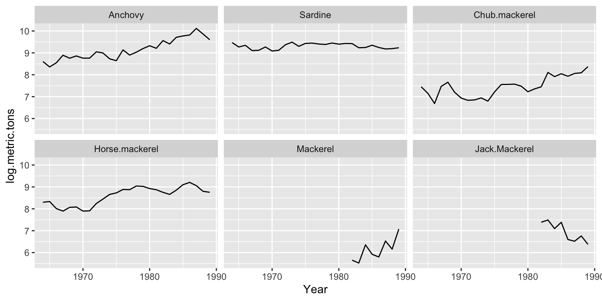

1.2 The landings data and covariates
The FishForecast package has the following data objects:
- greeklandings The 1964 to 2007 total landings data multiple species. It is stored as a data frame, not ts object, with a year column, a species column and columns for landings in metric tons and log metric tons.
- anchovy and sardine A data frame for the landings (in log metric tons) of these species. These are the example catch time series used in the chapters. The data are 1964-2007, however Stergiou and Christou used 1964-1989 and the time series are subsetted to this time period for the examples. These data frames have only year and log.metric.tons columns.
- anchovyts and sardinets A ts object for the yearly landings (in log metric tons) of these species.
- anchovy87 and sardine87 A subsetted data frame with Year <= 1987. This is the training data used in Stergiou and Christou.
- anchovy87ts and sardine87ts A ts object for the yearly landings (in log metric tons) of these species for 1964-1987.
- ecovsmean.mon and ecovsmean.year The environmental covariates air temperature, pressure, sea surface temperature, vertical wind, and wind speed cubed average monthly and yearly over three 1 degree boxes in the study area. See the chapter on covariates for details.
- greekfish.cov The fisheries covariates on number of boats, horsepower, and fishers.
Load the data by loading the FishForecast package and use only the 1964-1989 landings. We use subset() to subset the landings data frame. Not window() as that is a function for subsetting ts objects.
## Loading required package: FishForecastlandings89 = subset(greeklandings, Year <= 1989)
ggplot(landings89, aes(x=Year, y=log.metric.tons)) +
geom_line() + facet_wrap(~Species)